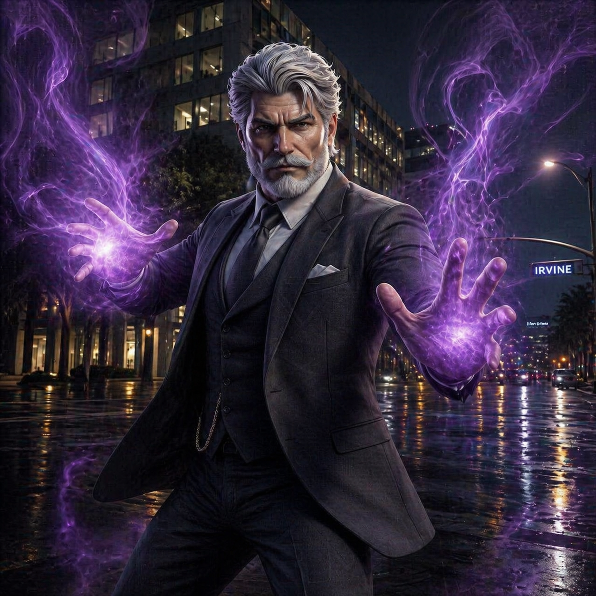
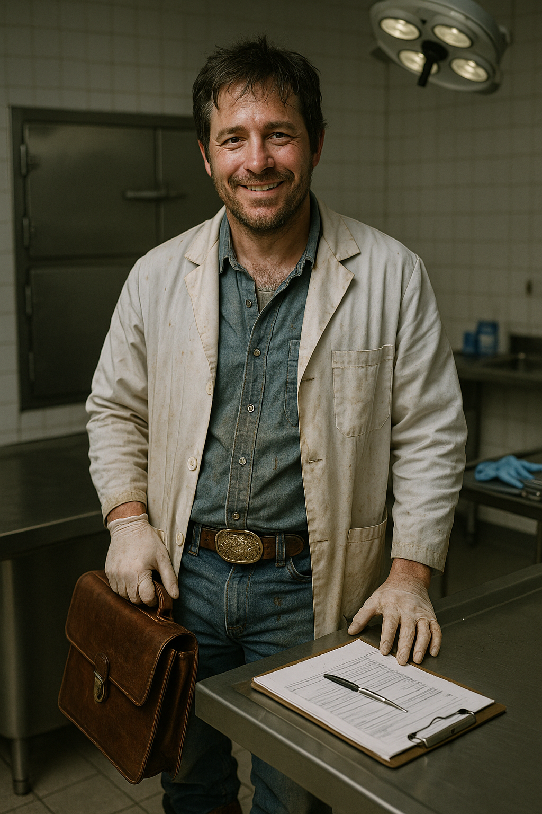
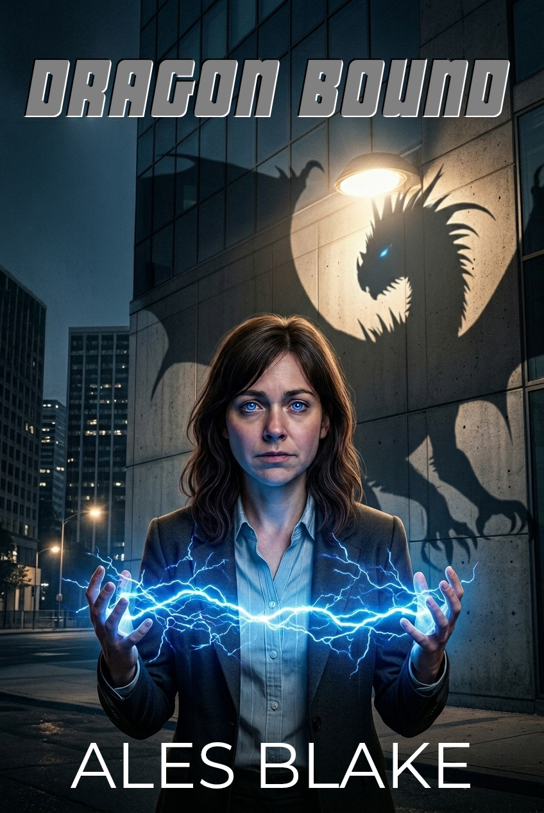

Within California
Current Quarter
of Interest
Deployed
Latest Updates
Statement Regarding The Park at Irvine Spectrum — December 2024
The Californian Investigative Unit is actively investigating a serious incident at The Park at Irvine Spectrum apartment complex. Three unique individuals were found deceased in a residential unit in the early hours of December 14, 2024. The matter has been classified as a special homicide investigation.
Residents of The Park are asked to report any unusual activity observed between December 12–14. Investigators are particularly interested in reports of unusual sounds, vibrations, unfamiliar individuals, or any disturbance in the vicinity of the complex during that period.
Case Transfer Notice — Salford Avenue
Following a preliminary review, the Salford Avenue incident has been determined to fall within the standard purview of local law enforcement. The full case file has been transferred to the Irvine Police Department's homicide division, effective December 13, 2024.
Reminders

Updated procedure for Code 415 incident response — November 2024
Incidents classified as Code 415 (disturbance of the peace) are to be handled with caution. Prior to engagement at locations exhibiting electromagnetic spectrum irregularities, ensure appropriate protective barrier equipment is deployed to safeguard the civilian population.
If the responding agent suspects the likelihood of escalation to a code 245 (assault with deadly force) as a result of residual or newly introduced EM spectrum irregularities, inform supervisory personnel immediately.
The Californian Investigative Unit
History & Mandate
The Californian Investigative Unit was established in 1924 under the authority of the California Department of Justice. It was created to close the abundance of unusual and distinct case files accumulating in too many precincts across California. Without satisfactory explanations and no agency/bureau willing to take responsibility for them, these case files and victims were left without a voice.
Cases with no recognizable cause of harm. Evidence that didn't correspond to any known pattern. Witnesses who couldn't—or wouldn't—describe what they had seen in terms that made any sense to a regular detective.
The CIU was founded to not only be the solution, for these cases, but to work with law enforcement agencies to ensure the unusual does not slip between the cracks.
One hundred years later, that hasn't changed. The cases have evolved. The paperwork is unending. The snack and beverages, depending entirely on which Sergeant is on shift, are markedly better.
The CIU's headquarters and primary investigative branch has been located in Irvine since 1966, when the growth of Orange County made a permanent regional presence necessary. Before that, agents operated out of Los Angeles, Santa Ana, and — during one particularly difficult period in 1943 that remains classified at Level 4 — a converted bait shop in Huntington Beach. We don't talk about 1943.
The CIU also liaises with several other sister agencies including: the Harmonization and Vocational Empowerment Network (HAVEN) featured above, and Veilguard—the Superordinal Governance and Response Organization.
Statewide Jurisdictional Coverage
The Californian Investigative Unit maintains operational readiness across the 163,696 square miles of California territory. To ensure rapid response times, resources are deployed through four regional command hubs. The Irvine Headquarters serves as the primary administrative and forensic base, and houses Unit 7937 — the division featured in our current public briefings.
Headquarters: Irvine, CA
Regional Office: San Francisco, CA
Regional Office: Fresno, CA
Regional Office: Redding, CA
Partner Agencies
| Lead Authority | California Department of Justice — Special Investigations Division |
| Law Enforcement | Irvine Police Department | Orange County Sheriff's Department | California Highway Patrol (liaison) |
| Medical & Forensic | Orange County Coroner's Office, Santa Ana |
| Welfare & Rehabilitation | HAVEN Community Outreach & Rehabilitation Services |
| Legal & Professional Standards | Veilguard Office of Professional Standards |
| Federal Liaison | Redacted Access requires Level 3 clearance. |
A Note on Methodology
The CIU does not publish its investigative methodology. What we can confirm is that our agents hold advanced qualifications in criminal investigation, evidence processing, and forensic assessment. All agents complete an intensive induction program at the HAVEN Training Facility prior to deployment.
Agents work in pairs. Cases are assigned by the Office of the Captain. Evidence is processed at our in-house forensic suite or, where expert post-mortem examination is required, at the Orange County Coroner's Office in Santa Ana.
Our agents are experienced professionals. They have encountered circumstances that resist straightforward explanation. That is, broadly speaking, the job description. It has been since 1924.
Active Investigations — Unit 7937
Official Summary: Three individuals were found deceased in a locked residential unit at The Park at Irvine Spectrum in the early hours of December 14, 2024. Cause of death: catastrophic physical trauma. Preliminary examination indicates multiple distinct injury patterns across the three victims, suggesting either multiple perpetrators or a methodology unlike anything currently on record.
No forced entry. No identifiable weapon. No matching EM signature. One witness identified at the scene — statement taken, corroboration ongoing. Evidence processing is underway. No suspect has been identified. This case is highly active.
[GEN'S FIELD NOTES]
PRELIMINARY OBSERVATIONS: Scene is a right bloody mess. On the surface, it looks like a standard home invasion gone south, but the ECP's are pulling triple duty to keep the locals from seeing the truth. To a "normal," it’s just yellow tape and tragic headlines. To me? It’s a sensory assault. The room hummed with a discordant frequency that made my █████████ itch under my skin—a low, grinding vibration that felt less like a sound and more like a threat.
We’ve got three bodies: one female ████████, two males (one confirmed ████████████). The methodology is... inconsistent. We’re looking at blunt force trauma, surgical dismemberment (Female is missing the right arm), and signs of post-mortem feeding. It’s a grotesque cocktail of a pack-mentality-kill and a calculated ritual. If I didn't know better, I’d say we have three different killers, or one very confused monster with a serious identity crisis.
WITNESS DISPOSITION: One ██████████ witness, currently twitching and desperate to get to his "█████████" before sunrise. Statement is likely bollocks—claims it smelled like sulfur and felt like ice. Standard "Boogeyman" descriptors. Sgt. Absalom is handling the interrogation with his usual saint-like patience. I, meanwhile, am trying not to upchuck onto the evidence.
INITIAL IMPRESSION: This isn't a random hit. You don't rip a ███████’s liver out for the fun of it—well, some might, but not with this level of specific violence. There’s a pattern here, buried under the gore and the scrambled-egg curtains. My █████████ is awake, and she’s pissed off. I’m going back to the wardrobe inventory. Something about that blouse is sticking in my throat, and it isn't just the Vicks VapoRub.
STATUS: Investigation Ongoing.
ADDENDUM:
Tell the Techs if they lose that earring, I’m biting someone.
The "Hum": Noted a persistent EM residue. It doesn't align with standard signatures. It’s predatory. It’s an earworm that wants me to █████████ and bite something.
Official Summary: A CIU field agent sustained injuries of an undetermined nature during an operation at a warehouse facility in the industrial district. The agent has been transferred to a welfare facility for assessment and recovery. The case has been placed in monitoring status pending further review. The nature of the incident is under internal investigation.
SUPPLEMENTAL INCIDENT REPORT: OFFICER INJURY
CASE REF: WH-992-B (Warehouse District / Sector 4)
DATE/TIME: 14-DEC-24 / 02:45 HRS
REPORTING AGENTS: Davis, R. / Burrows, L.
INCIDENT SUMMARY
During a scheduled sweep of the warehouse interior (Loading Bay 3), the night shift team was conducting a perimeter check to investigate suspected Veil fluctuations. Agent George was navigating the catwalk above the primary storage floor when he encountered an unidentified viscous substance. Initial assessment suggests the substance possessed a low friction coefficient and an atypical refractive index, rendering it virtually invisible to standard tactical lighting.
MEDICAL STATUS & DISPOSITION
Agent George lost footing upon contact with the substance, resulting in a fall and secondary exposure to the material. Due to the rapid onset of an adverse physiological reaction—specifically localized dermal necrosis and respiratory distress—standard medical protocols were bypassed in favor of immediate transport to HAVEN. The scene was briefly cordoned off; however, upon the arrival of the containment sweep, the substance had completely sublimated, leaving no recoverable samples for laboratory analysis. Case remains open pending victim statement.
Transferred & Closed Files
Cases initially reviewed by CIU Unit 7937 and subsequently transferred to local law enforcement or closed following preliminary assessment. CIU involvement formally concluded on date of transfer unless otherwise indicated.
Official Summary: The CIU conducted an initial review of a homicide at Salford Avenue following referral from the IPD. Following preliminary assessment, the Captain determined the matter fell within the standard operational scope of the IPD homicide division. The full case file was transferred December 13, 2024.
[AGENT ZAHIR'S FIELD NOTES — ADDENDUM TO PRIOR TRANSFERRED CASE]
Regarding the incident last Saturday over in Santa Ana, I couldn't help but notice some unsettling parallels to the Spectrum scene Allen and Brenner just caught. It was a proper mess—the kind that stays with you even after a few stiff drinks—with the victims being entirely too 'normal', which, let’s be honest, means we hand it off to the locals and go about our day. But something about that case has bothered me since it was handed over. And the way those bodies were laid out? Having seen The Park, it feels like a blueprint of The Park's echoing maelstrom. As though the apartment scene were an echo. At the Santa Ana location, it was as if a localized storm had shredded the occupants while leaving the fine china on the mantle completely untouched. I mentioned it to Gen because, despite her usual "don't touch me" vibes, she’s got the sharpest instincts in the unit, and I’ve got a gut feeling these two cases are dancing the same dark tune. It’s not a perfect match, but there’s a signature in that carnage that feels far too deliberate to be a coincidence.
Official Summary: An individual was found deceased in Parking Structure C at the Irvine Spectrum. Cause of death: undetermined. Following preliminary CIU review, the Captain determined that insufficient grounds existed to pursue a further investigation. Classified as accidental. No referral to IPD was made. Case closed November 30, 2024.
[GEN'S FIELD NOTES:]
REDACTION OVERRIDE: Agent Allen, G. (7937-B)
STATUS: CLOSED (Under Protest)
The Captain calls this an "accidental death." I call it a load of absolute bollocks. George found this one, and the poor bloke was rattled for a week—not because of the body, but because of the lack of it. The "undetermined" cause of death is a nice, sterile way of saying the victim looked like they’d been hollowed out from the inside by a vacuum cleaner. No trauma, no struggle, just a human shell left in a concrete stall like a discarded candy wrapper.
The Captain shut this down in eight days. Eight days. We spent longer than that debating the catering for the holiday bash. There wasn't even a referral to the local police—no "unfortunate heart attack" cover story, no "found by a passerby." Just a quick sweep, a heavy dose of Disinterest Emitters, and a file stamped 'Closed' before the body was even cold. It’s too tidy. It reeks of someone scrubbing the stairs before anyone can see the bloodstains.
George might have been the one to find it, but the Captain is the one who buried it. If this is what passes for "accidental" in Sector 4 these days, I’m a fire-breathing Chihuahua. I’m keeping a copy of the original vitals in my private locker. My █████████ are prickling, and they haven't been wrong about a "supe-sized" cover-up yet. Something was hunting in that structure, and the Captain just gave it a free pass.
Official Summary: Four individuals sustained injuries described by attending paramedics as inconsistent with any identifiable cause of harm. The CIU attended the scene and, following assessment, the Captain determined the incident did not meet the threshold for CIU involvement. File transferred to the OCSD. No arrests made. No suspect identified.
[AGENT ZAHIR'S FIELD NOTES — TO BE WRITTEN]
Halloween in Santa Ana—usually a nightmare of amateur mages and kids seeing through the Veil after too many Pixy Stix. But this was different. Four normals, physically intact but mentally... empty. The paramedics were scratching their heads because there wasn't a mark on them, yet their central nervous systems were firing like they’d been shoved into an electrical socket.
I told the Captain then, and I’ll say it again: the air in that living room didn’t just feel cold, it made the hairs on the back of neck stand to attention. They were almost vibrating! I couldn't hear it but I could feel it in my ██████. At the time, the Captain laughed it off as "holiday atmospheric interference" and handed the poor bastards over to the Sheriff’s Department to be labeled as a group drug psychosis.
He didn't want to hear about the residue. He didn't want to hear that the furniture hadn't moved an inch while the victims' minds were being liquified. It was a clean, surgical strike of pure ██████ frequency, and we walked away because they were "just too normal." We missed the opening act, and now the Spectrum victims are paying for the encore. If anyone bothers to check the OCSD intake records, I bet those four normals still haven't woken up.
Dragon Bound is set in a world where humans go about their daily lives entirely unaware that the person next to them on the freeway might have scales, or fangs, or the ability to pull fire from thin air. The California Investigative Unit is the human face of STRIKE—the supernatural agency that keeps it that way. These are the people who make that work. More or less. On a good day.
Unit 7937 — Southern California Field Office
NOTICE: Official personnel photographs are on file for all Unit 7937 agents. Visitors with active Clearance Level 2 credentials may hover over agent photographs to access unredacted personal files. Clearance verification is automatic. Unauthorised attempts will be logged with the Veilguard Office of Professional Standards.
Hover over the images to access unredacted personnel files

Beyond Unit 7937

⚠ Restricted Access
Additional personnel files are held at clearance Level 3 and above.
Unauthorized access attempts are logged and reported to the Veilguard Office of Professional Standards.

Dragon Bound
About the Book
Agent Genevieve Allen is a snarky, thirty-foot dragon working for STRIKE, a supernatural agency operating in the shadows of sunny California. Five years ago, she was human — until the extremist group PURE activated her dormant genes, forcing black wings to burst out of her broken human form. Now she navigates a system built for natural-born supernaturals, trusting only Sergeant Absalom Brenner, whose gruff steadiness has been her anchor ever since he saved her.
Until a triple murder shatters everything. Three victims lie savaged in a locked apartment. No forced entry. No known magical signatures. Just carnage — and a low, discordant hum only Gen can hear, a sound that triggers vertigo and buried memories.
When she reports the hum, even Absalom dismisses it as PTSD. Her captain destroys evidence, weaponizes news of Absalom's retirement to destabilize her, and saddles her with his inexperienced son. When more evidence surfaces, STRIKE cuffs her and forces medical leave to sideline her completely. Forced outside the system, Gen builds an unlikely coalition — the rookie son, the coroner, a STRIKE exile, and a troll. With the predatory hum growing stronger, Gen must solve the case — because whatever is hunting isn't choosing victims at random. It's resonating on her frequency.
Comparable Titles
Dragon Bound combines the noir tone and structure of Jim Butcher's Storm Front with the flawed institutional loyalty of Mick Herron's Slow Horses.
Readers who enjoy whip-smart protagonists with dialogue that makes you literally laugh out loud, or snarky, lovably cranky leads who might be cinnamon rolls underneath, will feel at home with Gen Allen — a thirty-foot dragon who broods on skyscrapers while mocking humans for trailing toilet paper, yet beneath the scales is a survivor rebuilding herself after trauma.
About the Author
For Literary Agents
Dragon Bound is a completed supernatural urban fantasy of approximately 105,000 words. It combines the noir tone and structure of Jim Butcher's Storm Front with the flawed institutional loyalty of Mick Herron's Slow Horses. It is the first book in a planned series and stands alone as a complete story. A synopsis, sample chapters, and full manuscript are available on request.
Content Warnings: Dragon Bound contains content that some readers may find distressing. Please read before proceeding.
Violence: Graphic descriptions of crime scenes including triple murder and later child death. Ritualistic and excessive violence. Physical assault including home invasion and near-fatal attack. Magical combat.
Abuse & Trauma: References to past kidnapping, imprisonment, and torture (off-page and in flashback). Themes of institutional corruption and systemic marginalization.
Medical & Psychological: Depictions of PTSD, sensory overload and meltdowns, concussion, and forced imprisonment and medication.
Bigotry: Depictions of extremist ideologies including eugenics-based prejudice and systemic discrimination against marginalized groups, analogous to real-world racism, ableism, and xenophobia.
Substance Use: Depictions of drug use and intoxication. A fictional drug (Phlogiston-9) used for incapacitation and torture.